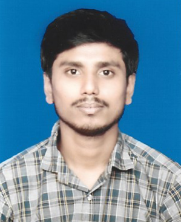

Naimur Rahman

425/B, Road - 2, South Delpara
Narayanganj, Dhaka
Contact No: +880 1642608736
Email: nrsazib234964@gmail.com
Career Objective
To achieve an exciting and creative position in an organization where there are opportunities to work with people
in an environment of excellence and position. A vision to work at a strategic and corporation level to
potentially become a future leader.
Educational Qualification
Degree (Still Studying)
- Institute : Govt. Tolaram College, Narayanganj
- Group : Bachelor of Business Studies
- Year of Passing : N/A
- Result : N/A
- Board/University : National University
Higher Secondery Certificate(H.S.C)
- Institute : Hazi Misir Ali College, Narayanganj
- Group : Science
- Year of Passing : 2018
- Result : 3.25 out of 5.00
- Board/University : Dhaka
Secondery School Certificate(S.S.C)
- Institute : Delpara High School, Narayanganj
- Group : Science
- Year of Passing : 2015
- Result : 3.78 out of 5.00
- Board/University :Dhaka
Experience
I worked as a Trainee Executive at the IE & Planning Department in the Dowas Land
Apparels Ltd for 1.5 years.
Skills
- Ms Word
- Ms Excel
- Ms Powerpoint
- Typing
- Data Entry
Language Proficiency
Bengali : Proven proficiency in mother tongue, both written and spoken.
English : Proven ability in both written and spoken communication
Interests & Hobbies
Travel : Exploring new cultures and meeting people from different backgrounds has taught me adaptability,
open-mindedness, and communication skills.
Football : Playing in a team has helped me develop teamwork and leadership skills.
Cricket : Playing cricket requires focus, determination, and strategy, skills that I have developed and
applied in various areas of my life.
Personal Information
- Full Name: Naimur Rahman
- Father's Name: Abul Kalam
- Mother's Name: Sufia Begum
- Date of Birth: 1st July, 1999
- Nationality: Bangladeshi (by birth)
- Gender: Male
- Religion: Islam
- Marital Status: Unmarried
- Height: 5 Feet 6 Inch.
- Blood Group: A (+)
- Permanent Address: 425/B, Road : 2, South Delpara, Kutubpur, Fatullah, Narayanganj.